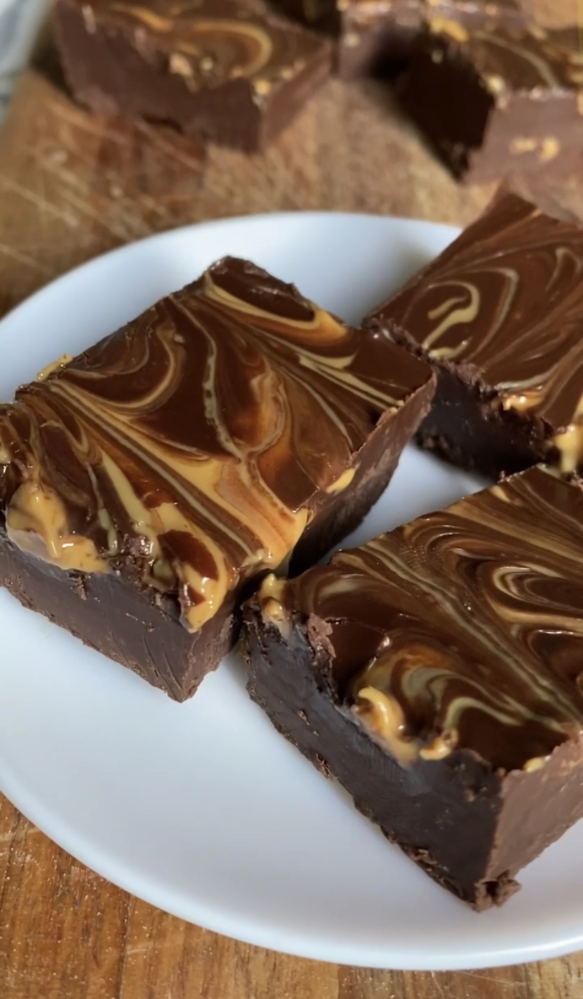
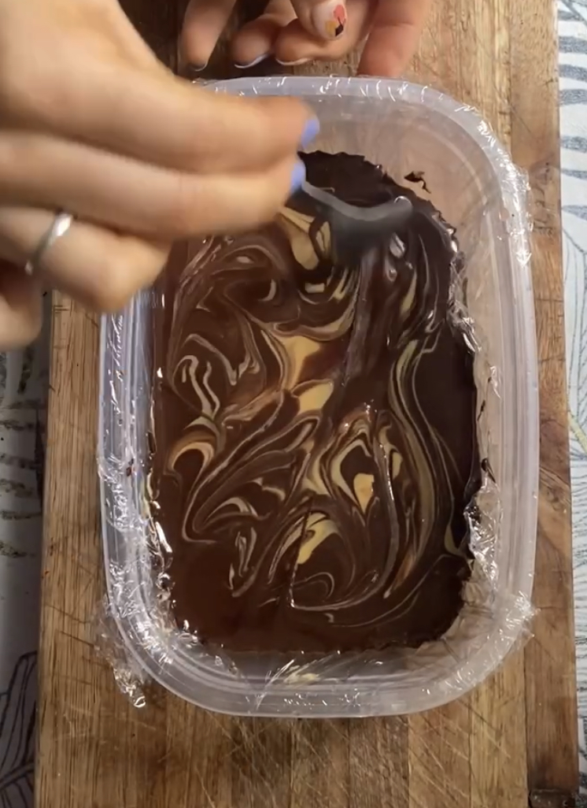

Bombones de Chocolate y Mantequilla de Maní
GF
DF
NS

No se puede explicar lo INCREÍBLE que queda esto y con tan solo DOS ingredientes.
Te aseguro que supera a cualquier bombón del mejor lugar que conozcas.
Bombones de Chocolate y Mantequilla de Maní
Riquísimos, con 2 ingredientes y listos en 20 minutos!
TIEMPO PREPARACIÓN
10 minutos
TIEMPO FRÍO
10 minutos
TIEMPO TOTAL
20 minutos
Porciones: 10
Plato: Postre
Tags: Vegano, Gluten-Free
Ingredientes
- 100g de chocolate amargo
- 4 cdas grandes de mantequilla de maní + extra para decorar
Instrucciones
- Derretí el chocolate a baño María o en el microondas de a intervalos de 30 segundos (no te me distraigas que se quema muy fácil ehh).
- Mezclá el chocolate con la mantequilla de maní y verté sobre un tupper con papel film.
- Poné un poco más de mantequilla de maní por encima y copate haciendo algunos dibujitos.
- Llevá a frío hasta que solidifique (freezer un ratito si sos impaciente como yo).
- Cortá como más te guste y dejá que vuelva a temperatura ambiente. Ahora sí, ¡A COMEEEER!
Tips
- Compartí. Son tan adictivos que no vas a querer parar y te va a doler la panzaaa
- No puedo repetirlo lo suficiente: no te distraigas cuando derritas al chocolateeeee!!! Es una pavada pero lo aprendí a los golpes, quemé chocolate demasiadas veces
PD: No digas "hago más así sobra" pues no te va a sobrar ni uno.

Buenas, Soy Valen!
Soy vegetariana hace más de 4 años y en mi tiempo libre me divierto creando recetas basadas en plantas.
Más Sobre MíKEYS RECETAS
V
Vegano
VG
Vegetariano
GF
Gluten Free
AP
Alta en proteínas
BA
Baja en Azúcares